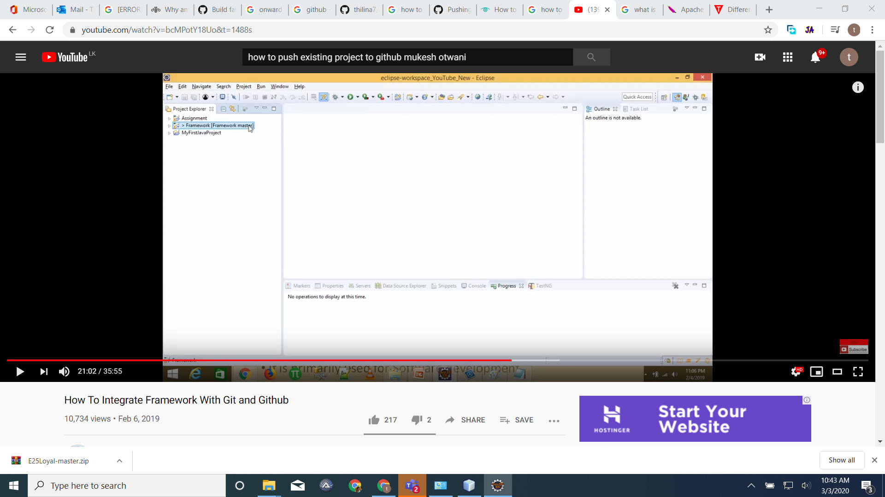

| Given user should be in the Instructor control panel to Automate the "6.2.1" Testcase | 4.88s |
| Tag Name | path | Value | Action | OffSetValue | | | ICP | icp | 24S VJ 13277 88461 | sclick | 0,0 | |
|
java.lang.AssertionError: --------------Failed to click ICP
at org.junit.Assert.fail(Assert.java:88)
at org.junit.Assert.assertTrue(Assert.java:41)
at com.cucumber.common.CommonSteps.VBSFillData(CommonSteps.java:1167)
at com.cucumber.definition.admin.Fires_and_Effects_Using_AMC.user_should_be_in_the_Instructor_control_panel_to_Automate_the_Testcase(Fires_and_Effects_Using_AMC.java:48)
at ✽.Given user should be in the Instructor control panel to Automate the "6.2.1" Testcase(E_6.2.3_Carry_out_SEAD_mission_by_an_Interrupted_method_of_fire.feature:6)
|
| And User should click on the clear button to "clear all the fields" clear all the fields | 0.00s |
| Tag Name | path | Value | Action | OffSetValue | | clear | clear | 24S VJ 13277 88461 | sclick | 0,0 |
|
| And User should be fill the data on the "Battery, FO, Mission type and Gun to fire" on the panel | 0.00s |
| Tag Name | path | Value | Action | OffSetValue | | Battery | Battery | 24S VJ 13277 88461 | sclick | 40,0 | | 20 | 20 | 24S VJ 13277 88461 | sclick | 0,0 | | FO | FO | 24S VJ 13277 88461 | sclick | 0,0 | | R2 | R2 | | sclick | 0,0 | | MissionType | MissionType | 24S VJ 13277 88461 | sclick | 0,0 | | SEAD | SEAD | 24S VJ 13277 88461 | sclick | 0,0 | | Guns1 | Guns1 | 24S VJ 13277 88461 | sclick | 0,0 | | Guns2 | Guns2 | 24S VJ 13277 88461 | sclick | 0,0 |
|
| And User should enter the "Grid location, Altitude and Direction" on the target location section | 0.00s |
| Tag Name | path | Value | Action | OffSetValue | Similarity Check | | Sup | Sup | 24SVJ 10205 85816 | textbox | 100,0 | | | Mark | Mark | 24S VJ 10204 85803 | textbox | 100,0 | |
|
| And User should fill the Target description "section size, Type and Status" | 0.00s |
| Tag Name | path | Value | Action | OffSetValue | Similarity Check | | Size | Size | 24S VJ 13277 88461 | sclick | 0,0 | 0.95 | | Squad | Squad | 24S VJ 13277 88461 | sclick | 0,0 | 0.90 | | Modifier | Modifier | | sclick | 0,0 | 0.90 | | Reinforced | Reinforced | | sclick | 0,0 | 0.90 | | Type | Type | 24S VJ 13277 88461 | sclick | 0,0 | 0.95 | | TypeArrowDown | TypeArrowDown | | sclick | 0,0 | 0.95 | | TypeArrowDown | TypeArrowDown | | sclick | 0,0 | 0.95 | | Troops | Troops | 24S VJ 13277 88461 | sclick | 0,0 | 0.90 | | Modifier2 | Modifier2 | 24S VJ 13277 88461 | sclick | 0,0 | 0.90 | | SmallArms | SmallArms | 24S VJ 13277 88461 | sclick | 0,0 | 0.90 | | Status | Status | 90 | click_similar | 40,0 | 0.80 | | InOpen | InOpen | 24S VJ 13277 88461 | sclick | 0,0 | 0.90 | | TargetDescription | TargetDescription | 90 | sclick | 0,0 | 0.90 | | pagedown | wp | 24S VJ 13277 88461 | pagedown | 0,0 | 0.95 |
|
| And User should Ammo/Fuse combination section "Ammo/Fuse and Tick on number per rounds and specofied rounds" | 0.00s |
| Tag Name | path | Value | Action | OffSetValue | Similarity Check | | Supperssion_Ammo | Supperssion_Ammo | 24S VJ 13277 88461 | sclick | 100,0 | 0.95 | | HE | HE | 24S VJ 13277 88461 | sclick | 0,0 | 0.90 | | wp | wp | 24S VJ 13277 88461 | sclick | 0,0 | 0.95 | | pagedown | wp | 24S VJ 13277 88461 | pagedown | 0,0 | 0.95 |
|
| And User select a "Method of Fire and control" Method of Fire and control | 0.00s |
| Tag Name | path | Value | Action | OffSetValue | Similarity Check | | Continuous | Continuous | | sclick | 0,0 | 0.90 | | Interrupted | Interrupted | | sclick | 0,0 | 0.90 | | SEAD_ok | SEAD_ok | | sclick | 0,0 | 0.90 | | CASTOT | CASTOT | 10 | textbox | 0,0 | 0.90 | | ArrowUp | ArrowUp | | sclick | 0,0 | 0.90 |
|
| And User should click on the " valid and execute button" valid and execute buttons | 0.00s |
| Tag Name | path | Value | Action | OffSetValue | Similarity Check | | Validate | Validate1 | | sclick | 0,0 | 0.80 | | Execute | Execute1 | | sclick | 0,0 | 0.80 |
|
|  |